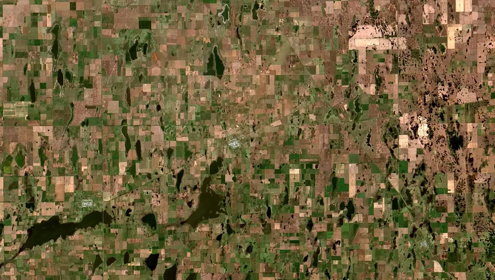

Servicios
Cinco áreas. Un mismo criterio profesional.
De la tesorería corporativa al financiamiento del campo, cada servicio se estructura a medida de quien lo necesita.
01
Ingeniería de Caja y Tesorería Corporativa
- Rendimientos dinámicos calzados con vencimientos
- Revisión de eficiencia impositiva en cada colocación
- Reportes de posición consolidada, semana a semana
- Optimización de la operatoria cambiaria
- Atención directa y personalizada de los socios
02
Protección del Patrimonio Familiar y Personal
- Multi Family Office: un único interlocutor para cuentas dispersas
- Administración de carteras diversificadas por moneda y plazo
- Preservación de capital con horizonte de largo plazo
- Planificación patrimonial y sucesoria
- Banca privada con seguimiento personalizado
03
Fondo de Asistencia Laboral (FAL)
- Estructuración del fondo conforme a normativa vigente
- Diseño del reglamento y esquema de aportes
- Administración y reporte periódico
- Seguimiento ante los organismos de contralor
- Cumplimiento normativo continuo
04
Financiamiento PyME Inteligente
- Descuento de cheques de pago diferido
- Obligaciones Negociables PyME
- Avales SGR para mejorar condiciones de acceso
- Estructuración a medida del ciclo de negocio
- Acompañamiento en el acceso al mercado de capitales

05
El Agro y la Cadena de Valor Rural
- Financiamiento calzado con ciclos productivos
- Servicios para acopios y cooperativas
- Instrumentos de cobertura y capital de trabajo
- Estructuras a medida para la cadena de valor rural
- Seguimiento de los tiempos comerciales del campo
¿Cuál es su necesidad?